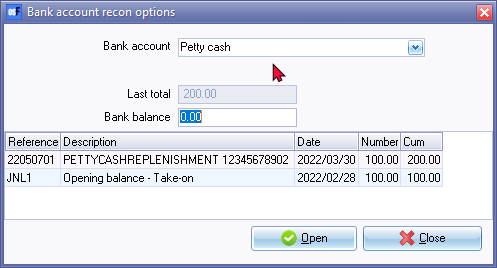
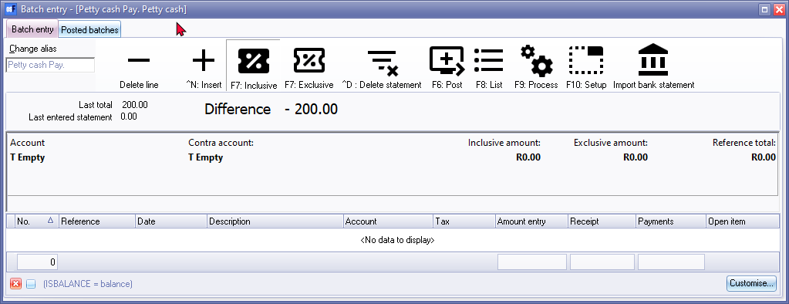
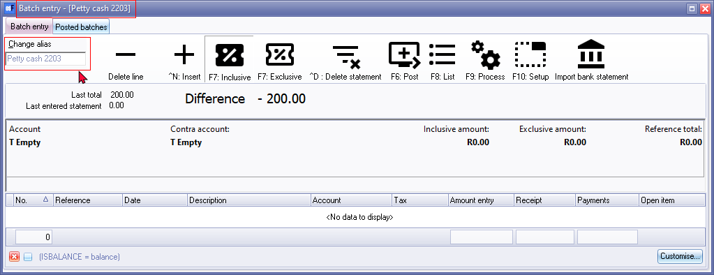
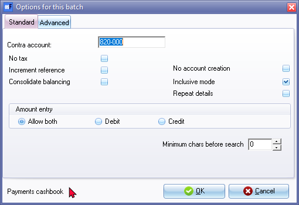
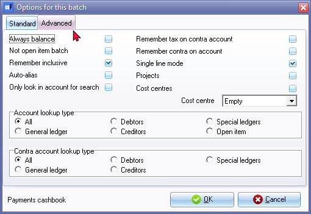
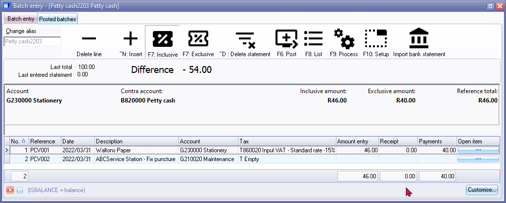
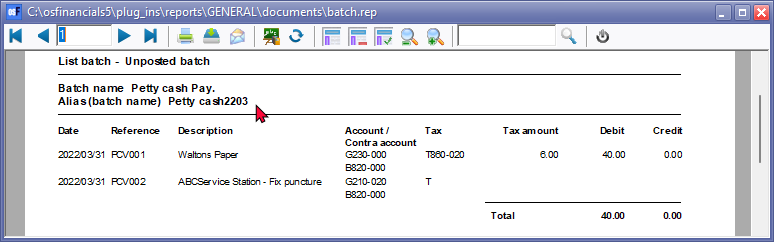
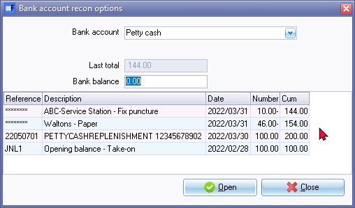

Bank import plugin - Petty cash transactions (Manual entry)
Bank Import plugin Petty Cash transactions
Since the Petty Cash account is included in the templates of osFinancials as a Bank account type. It is recommended that Petty Cash accounts should be added or created as a Bank account type. Once the BankImport plugin is activated, the Petty cash payments batch and receipts batch will be combined into one “Batch entry” screen.
|
|
Petty cash payments should be used as a bank account. If it is used as a normal General ledger – Balance sheet Account, it could cause problems on the Tax Reports (Input VAT/GST/Sales tax). |

|
|
If the “Show details” option is not selected (not ticked) on the "Import" tab of the "Import bank statement" screen, the “Check” screen will not be launched. |

Entering your petty cash payments (Manual entry)
There are basically two (2) ways to capture the petty cash transactions:
- Enter the transactions manually from your petty cash slips or petty cash vouchers.
- Importing the transactions from a petty cash register as a Comma Separated Value (*.csv) file as a delimited file import.
For the purpose of this example, we assume that you have paid the following expenses from your petty cash:

To enter your petty cash payment transactions:
- On the Default ribbon, select Cash / Bank entry.

- Select the Petty cash as the “Bank account” and click Open.

- Enter the alias (batch name) in the “Change alias” field. In this example, enter ''PettyCash2203'' to indicate that the Petty cash of March 2022 was entered in this Petty cash payments batch.
|
|
The alias option allows you to identify a batch by a unique name. You will be able to select the batch by alias or batch name if you need to reverse the posted batch or import a posted batch. |

- Click on the F10:Setup icon to set your batch up. This is a once-off action, unless your requirements change. The “Options for this batch” screen is displayed:

|
|
The contra account is by default set to the Bank account. You cannot change this in the Payments journal or Petty cash Payments journal. |

- Once setup; click on the Advanced tab.

- Leave all fields blank, and make sure that the default option, “Account lookup type”, is set to “All” for this exercise.
- Once setup; click OK. You are now ready to record your first petty cash payment.
- Capture your petty cash vouchers from your petty cash voucher book or from your requisitions. Use your petty cash voucher number as the reference number.
|
Ref. no. |
Date |
Description |
Account |
Tax |
Amount |
|
PCV001 |
2022/03/31 |
Paper - Waltons |
Stationery |
Input Tax - 15% |
46.00 |
|
PCV002 |
2022/03/31 |
Fix puncture - ABC Service Station |
Maintenance |
No tax |
10.00 |
- After capturing your first two petty cash payment vouchers, the Petty cash payments journal is displayed as follows:

|
|
The F5: Balance icon is not available on the “Batch entry” screen for the imported transactions form your bank statements. Balancing entries will automatically be generated for the imported transactions form your bank statements when you post (update) the imported bank statement transactions to the ledger. |
Posting the petty cash batch
Once you have completed entering these petty cash payments, and you are sure they are correct, you may proceed to finalise the batch. The recommended process, is as follows:
- Click on the F8:List icon to print a list of the transactions in the batch.

|
|
It is recommended that the source documents (e.g. petty cash vouchers and/or invoices, slips, etc. received from suppliers, etc.) be attached to this List of the transactions and that it be retained for record and audit purposes. |
- Click on the F6:Post icon to post (update) the batch to the ledger. Posting the transactions will automatically generate the necessary balancing entries. The “Batch entry” screen will automatically be closed. The “Bank account recon options” screen is displayed:

- All the imported and processed bank statement transactions, which are posted (updated) to the ledger, will be listed.
- Click Close.